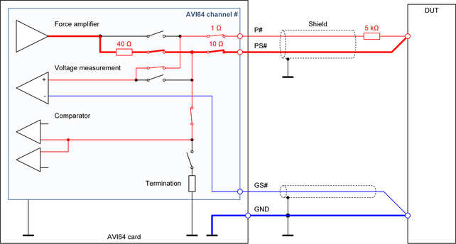

AVI64 reverse Kelvin connection
The "reverse Kelvin connection" is the scheme to use an AVI64 channel in high-precision DC and high-speed applications with low capacitive load.

Characteristics of the connection scheme
This connection scheme provides separate force and sense connections to the DUT in combination with a minimized capacitive load. This connection scheme is optional for the Digital I/O operating mode and for the PMU operating mode. The connection scheme is optimized for the combination of high-precision and high-speed measurements.
This connection scheme is not supported for the DPS operating mode of SmarTest 7.
Recommended applications
- Combination of precision DC measurements and high-speed timing measurements
- Precision DC measurements with low capacitive load
- Operating mode crossover from the PMU operating mode to the Digital I/O operating mode and vice versa
Limitations of the connection scheme
- The current capability is limited to 50 mA.
- The shared floating high-current unit and the floating differential voltmeter cannot be connected.
- The shared high-resolution arbitrary waveform generator cannot be connected.
Layout recommendations
- The pin P# must be connected via a 5 kΩ series resistance.
- The pin PS# and the P# line behind the 5 kΩ series resistance must be connected together on the DUT board or directly at the DUT.
- We recommend placing the connection directly at the DUT so that the digital closed loop control is able to compensate the voltage drop on the PS# line.
- The pin GS# and the GND plane or GND line should be connected together directly at the DUT so that the digital control loop is capable to compensate the voltage drop on the GND plane or GND line.
- We recommend shielding the P# and PS# line pair and the GS# line with the GND line or with a GND layer.
- The reverse Kelvin connection scheme may also be used for the "VM_HIZ" or "VM_HIZ_COH" state of SmarTest 7 or for the highImpedance connection mode of SmarTest 8 but the P# pogo pin will add more input leakage current and input capacitance to the DUT pin. We recommend therefore inserting a relay for separating the DUT pin from the trace to the P# pogo pin. The relay should be placed close to the DUT socket. For more information, refer to Combination of the Sense only connection and the Kelvin connection in AVI64 Sense only connection.
Note When using the AVI64 Kelvin test unit, the recommended P# series resistance of 5 kΩ will cause a failing result. The Kelvin test must be
replaced by two separate continuity tests via the P# pogo pin and via the PS# pogo pin. The connection modes
forceOnly and senseOnly of smarTest 8 or the connection states
"FORCE_ONLY" and "SENSE_ONLY" of SmarTest 7 are to be used for this purpose. For more
information, refer to PMU operating mode.
Functional changes
- Introduced in SmarTest 7.4.1 / 8.1.0